慧途研究院 · 产品解读
不是给你一张清单，而是告诉你每一个志愿为什么上、为什么不上。以下是真实报告的完整展示。
三个市面上罕见的分析维度，让每一个推荐都有据可查
以下均为真实报告数据示例——点击各模块，感受这份报告和市面上其他产品的本质区别。
| 学科质量 | 该校该专业学科评级与师资水平 |
| 保研潜力 | 历年保研率及推免目标院校质量 |
| 城市匹配 | 学生城市偏好与院校所在地匹配度 |
| 兴趣匹配 | 基于霍兰德画像的专业兴趣契合度 |
| 收入出口 | 毕业5年中位薪资及就业去向质量 |
| 录取把握 | 基于历年位次的录取概率估算 |
| # | 院校 · 专业 | 层次 | 录取概率 | 综合评分 |
|---|---|---|---|---|
| 01 | 北京邮电大学 计算机科学与技术 | 冲刺 | 43% | 86分 |
| 02 | 华中科技大学 软件工程 | 稳妥 | 67% | 84分 |
| 03 | 西安交通大学 人工智能 | 稳妥 | 58% | 81分 |
| 04 | 北京航空航天大学 计算机科学与技术 | 冲刺 | 31% | 79分 |
| 05 | 哈尔滨工业大学 软件工程 | 稳妥 | 72% | 80分 |
| 06 | 中国科学技术大学 数学与应用数学 | 冲刺 | 28% | 77分 |
以下为完整版报告真实截图，共14页，从学生画像到最终志愿策略，每页均包含详细的个性化分析内容
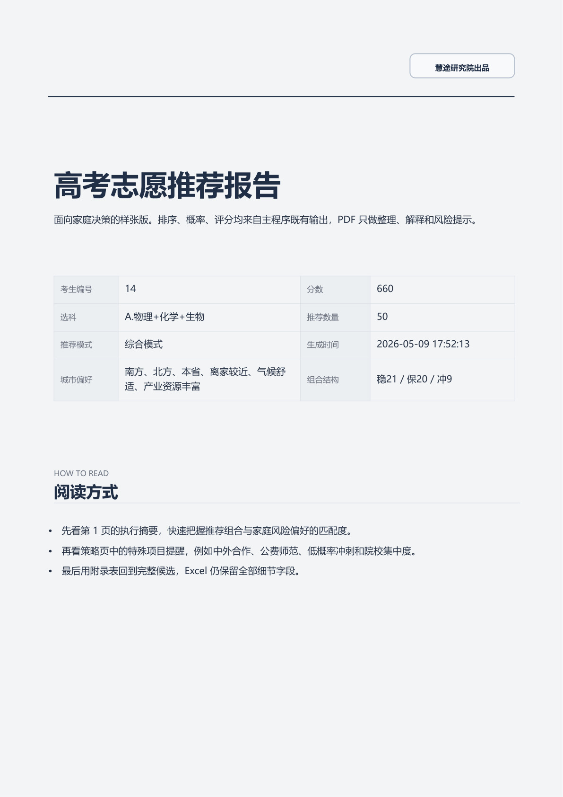
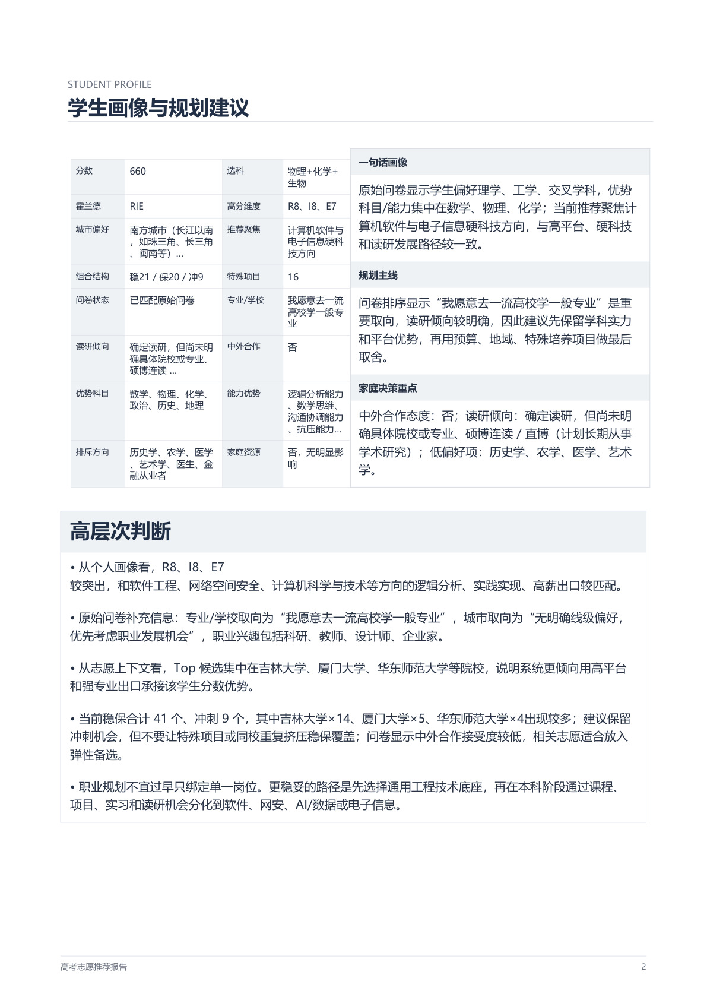
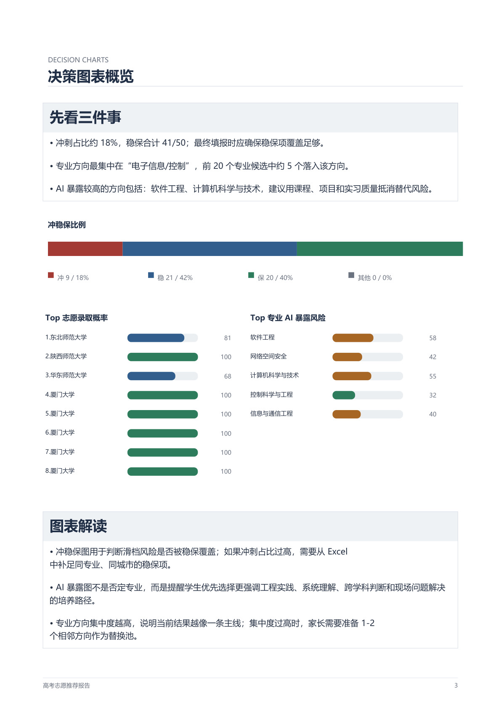
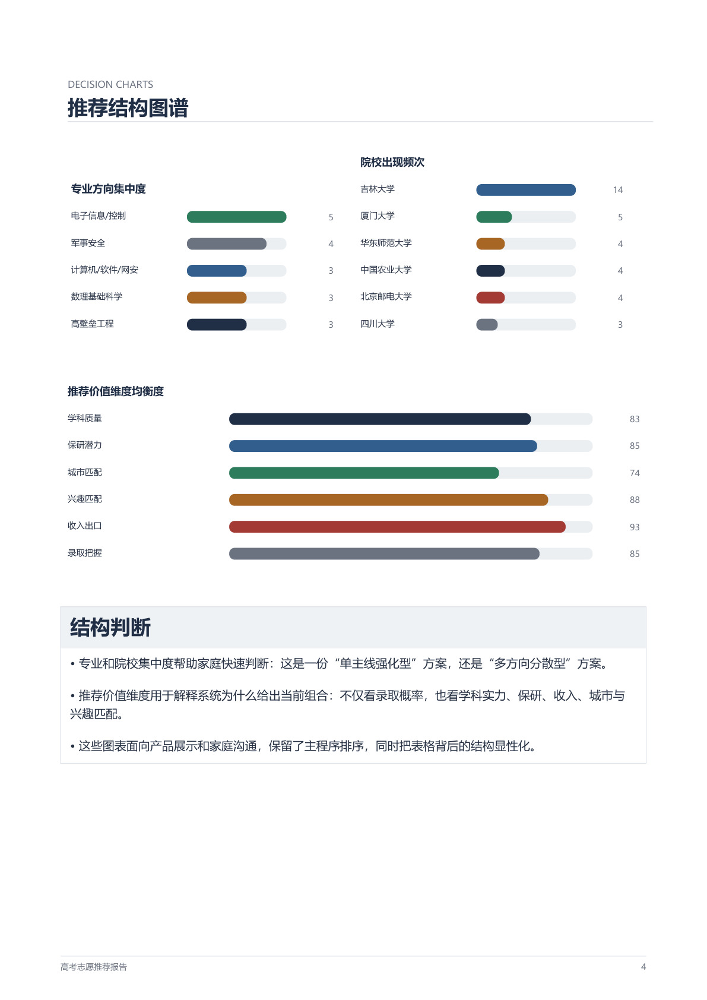
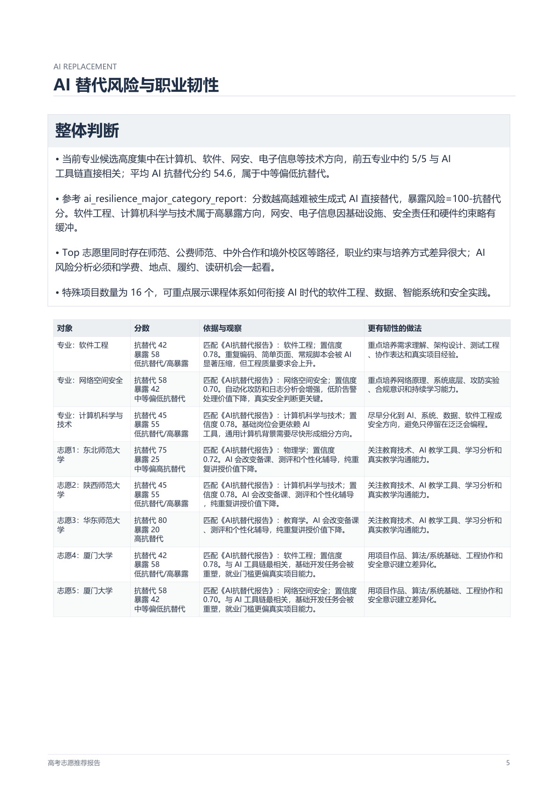
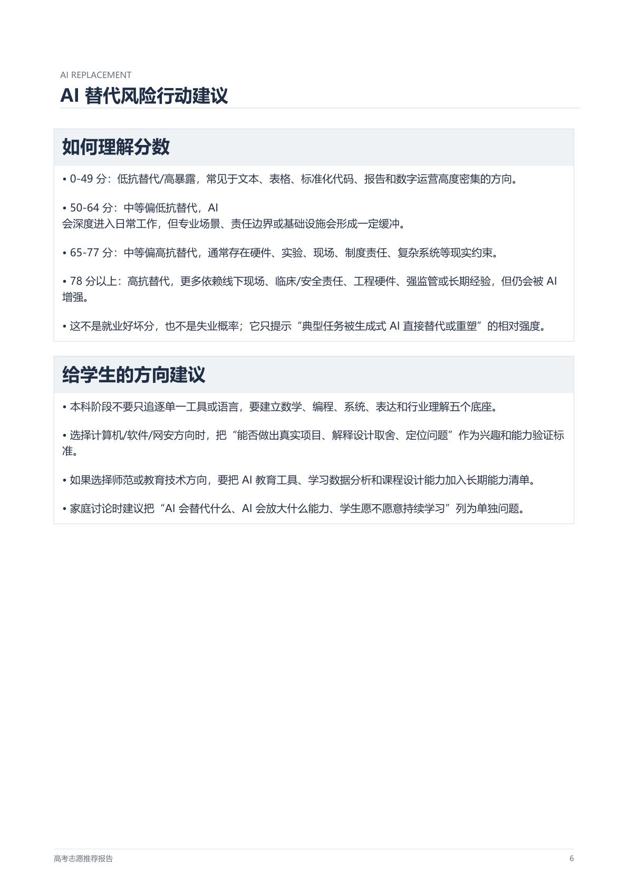
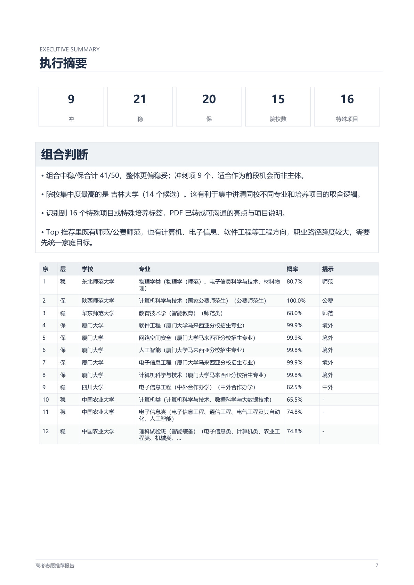
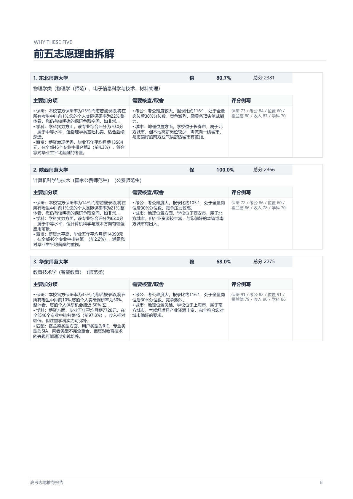
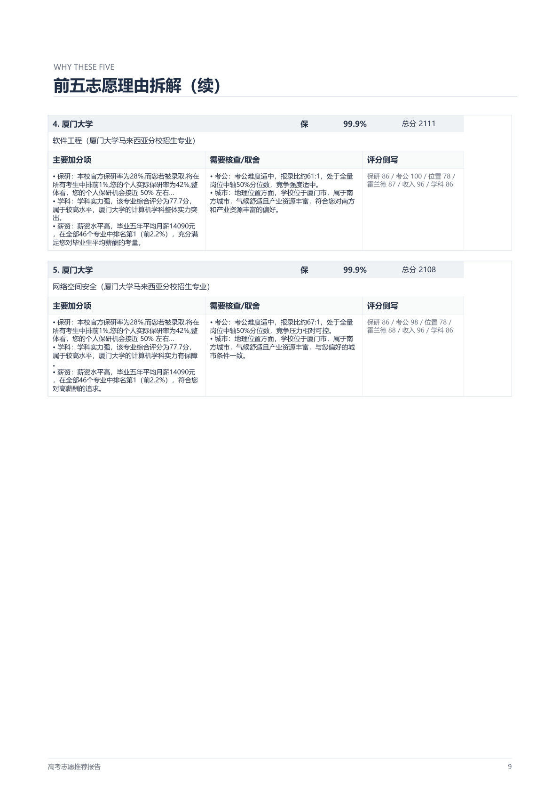
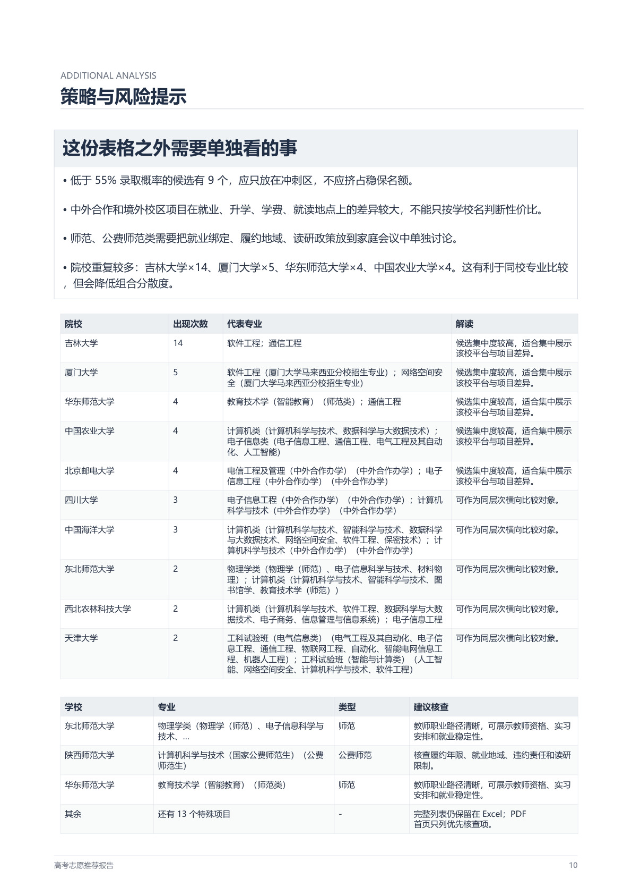
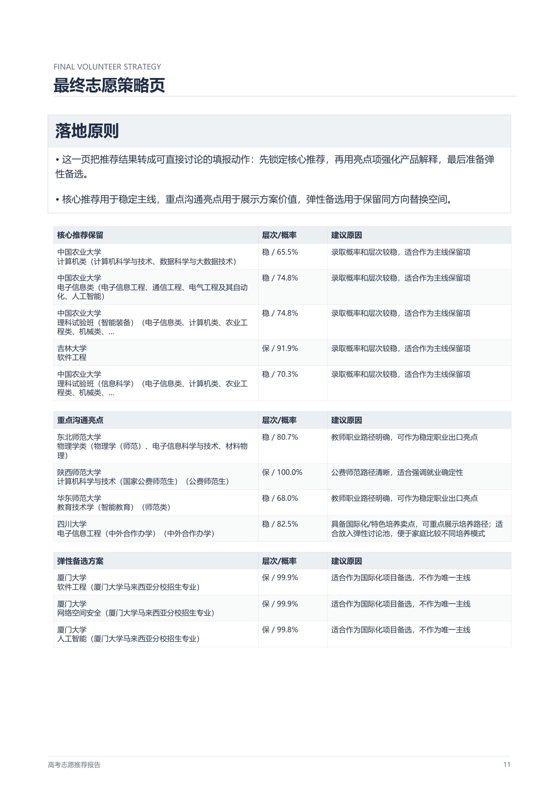
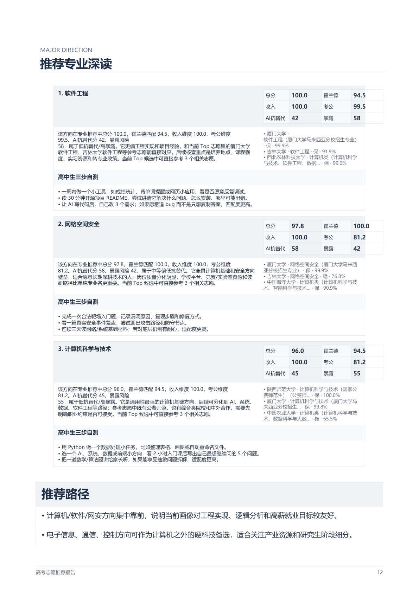
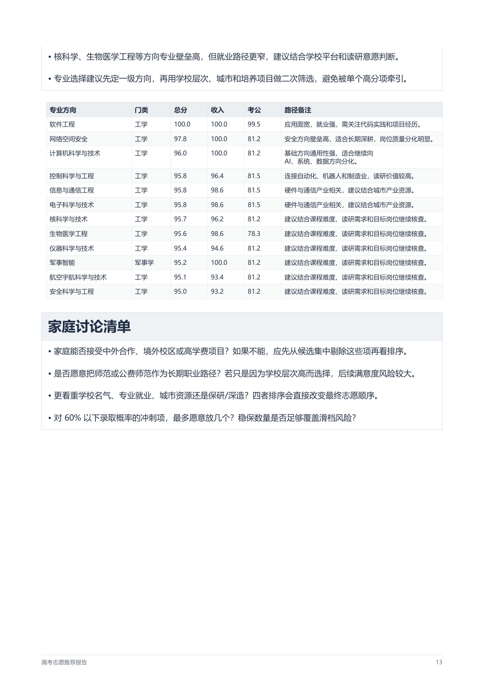
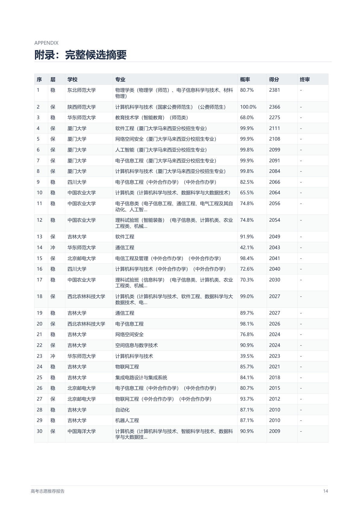
基于霍兰德画像、AI替代风险与六维量化分析，为每位考生定制一份清晰的志愿决策报告。
扫描下方二维码，添加 Jackie 老师微信，免费咨询志愿规划方案
微信扫码 · 免费咨询 · 通常24小时内回复